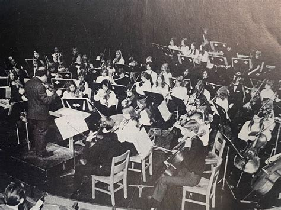

The Kitchener Waterloo Youth Orchestra is a vibrant orchestral training program that continues a legacy begun in 1966, inspired by the international youth orchestra movement. Originally founded as the Junior Symphony under its first conductor, Michael Bergauer, the group soon received the support of the Kitchener Waterloo Symphony and presented its first concert in 1968.
In 1974, the ensemble was renamed the Kitchener Waterloo Youth Orchestra by KWS Music Director Emeritus Raffi Armenian. Recognizing the importance of nurturing young artistic talent, Armenian also played a pivotal role in bringing to life the region’s renowned arts venue, the Centre in the Square, which became the home of the Kitchener Waterloo Symphony in 1980. Its main performance space, the Raffi Armenian Theatre, remains a lasting tribute to his vision and leadership.

The Youth Orchestra soon split into two ensembles by skill level and later expanded to three, each led by conductors from the KWS and the broader KW community.
In the 2023-24 season, KWYO was incorporated as an independent nonprofit, continuing the orchestral education tradition started by the Junior Symphony and its first conductor, Michael Bergauer. Mr. Bergauer’s vision and dedication were honored with his induction into the Waterloo Region Hall of Fame in April 2025.
Chronological List of Youth Orchestra Conductors
- 1966 Michael Bergauer
- 1967 Frederick Pohl
- 1971 Raffi Armenian
- 1978 Stuart Knussen
- 1979 Louis Lavigueur
- 1980 Alec Catherwood
- 1984 Victor Sawa
- 1993 John Barnum
- 1997 Erna Van Daele
- 2003 Paul Pulford
- 2011 Evan Mitchell
- 2014 Daniel Bartholomew-Poyser
- 2017 Matthew Jones
- 2018 Alexander Cannon
- 2019 Matthew Jones
Today, KWYO comprises three ensembles organized by skill level, continuing its tradition of musical excellence. Its structure ensured strong artistic leadership and mentorship for young musicians at every stage of their development. By collaborating with local professional musicians, school teachers, and other youth groups, the orchestra provides young musicians with a platform to explore, grow, and develop their musical abilities and leadership skills.
Among the most significant and lasting influences on the Youth Orchestra’s artistic growth have been its collaborative performances with professional musicians of the Kitchener Waterloo Symphony, a tradition sustained to the present day. In addition, membres of KWYO continue to earn acceptance into the National Youth Orchestra of Canada.
Over the years, KWYO alumni have pursued careers as professional musicians, teachers, and leaders in the arts, STEM fields, and entrepreneurship. Many have joined orchestras and ensembles locally, across Canada, and around the world.